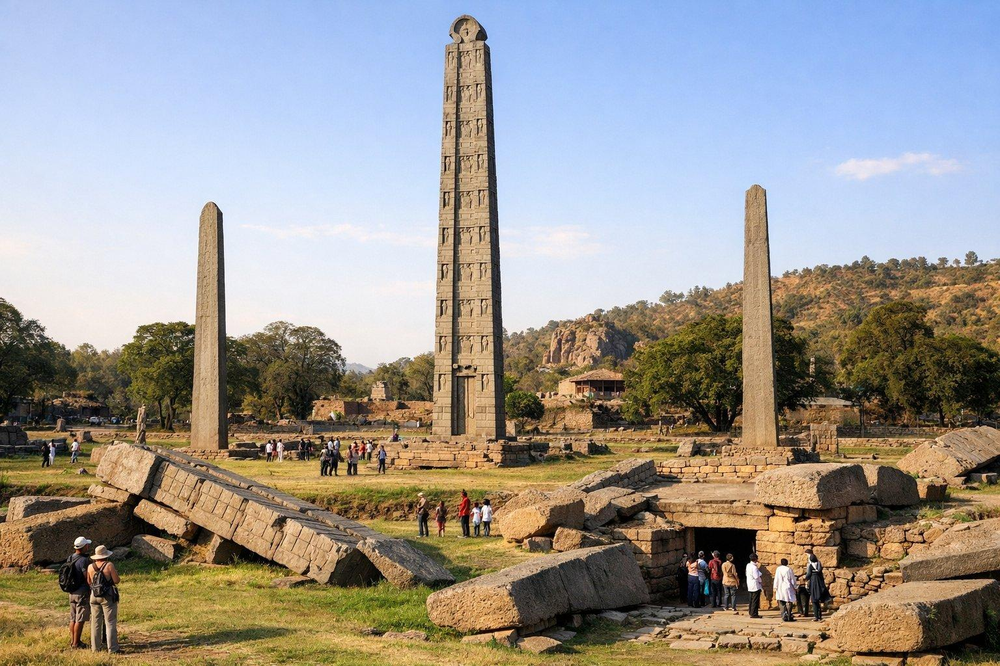
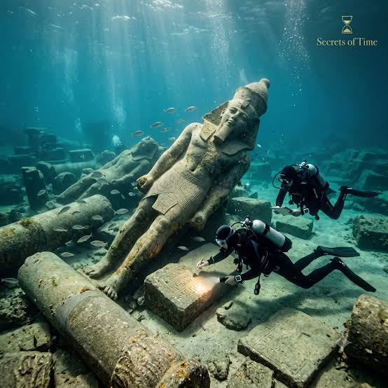
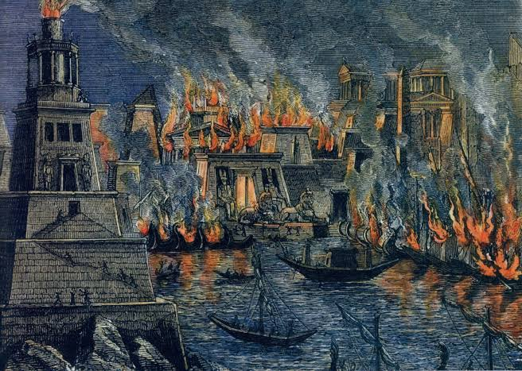
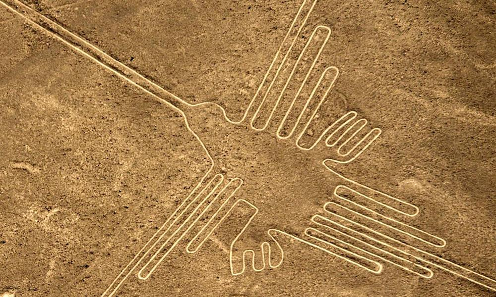
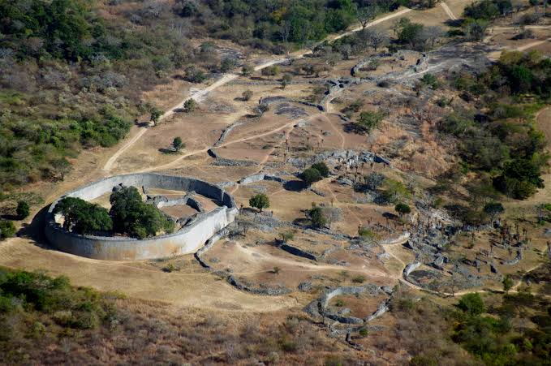

Lost history
History tells us about people,places and events.
The Kingdom of Aksum

what happened
The Kingdom of Aksum was one of the most influential ancient civilizations in African history. Located in what is now northern Ethiopia and Eritrea, it became a major center of trade connecting Africa, the Mediterranean and parts of Asia. Aksum was famous for its enormous stone monuments, known as stelae, which were constructed to mark important burial sites. Some of these monuments are among the largest ancient stone structures ever created. The kingdom also developed its own writing system, minted coins and adopted Christianity during the fourth century. Its influence gradually declined over the centuries, but its historical importance remains enormous.
The Lost City of Heracleion

what happened
For centuries, the ancient Egyptian port city of Heracleion was known mainly through historical accounts and legends. It eventually disappeared beneath the Mediterranean Sea. In 2000, underwater archaeologists discovered important remains of the city off the Egyptian coast. They found enormous statues, temples, coins, inscriptions and other objects beneath the water. The discoveries revealed that Heracleion had once been an important trading center. Its disappearance is associated with geological changes, subsidence and flooding.
TThe Library of Alexandria

what happened
The Library of Alexandria was one of the most famous centers of learning in the ancient world. Located in Egypt, it was associated with scholars, philosophers, mathematicians and scientists who traveled to study and exchange ideas. It was connected to the Mouseion, an institution dedicated to scholarship and research. Its collection was intended to gather knowledge from many different civilizations. The library's decline and destruction are often described as one dramatic event, but historians believe its history was more complicated. It likely suffered damage and decline across different periods.
The Nazca Lines

what happened
Across the dry desert of southern Peru are enormous drawings carved into the ground. These are known as the Nazca Lines. They include representations of animals, geometric shapes and human-like figures. Some designs stretch hundreds of meters and are best appreciated from above. Created by the ancient Nazca culture, the lines are believed to have had ceremonial or ritual significance. Researchers have proposed several explanations for their purpose, although not every design has a definitive interpretation.
The Great Zimbabwe

what happened
Great Zimbabwe is an enormous stone-built archaeological site in present-day Zimbabwe. It was an important center of political and economic power between approximately the 11th and 15th centuries. Its impressive dry-stone walls were built without mortar, using carefully arranged stones. The site contains large enclosures, towers and structures that demonstrate advanced construction skills. Great Zimbabwe was connected to regional and international trade networks, including trade involving gold and other valuable goods.